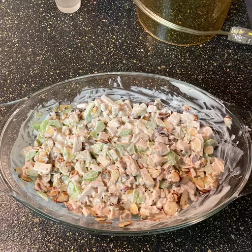

Chicken Salad

This chicken salad recipe is the best and a family favorite!
I like to use leftover roast chicken or baked chicken breasts that have been sprinkled with basil or rosemary.
Ingredients
- Cooked chicken - chopped or shredded.
- Mayonnaise
- Celery
- Black pepper
- Lemon juice
- Almonds
Steps
- Cook the meat in a skillet until browned and crumbly. Add onion and continue cooking until it's translucent. Stir in the canned tomato products, half of the parsley, garlic, basil, some salt,
oregano and sugar.
- Place almonds in a frying pan. Toas over medium-high heat, shaking frequently. Watch carefully, as they burn easily.
- Mix together mayonnaise, lemon juice, and pepper in a medium bowl.
- Toss with chicken, toasted almonts, and celery
- Enjoy!